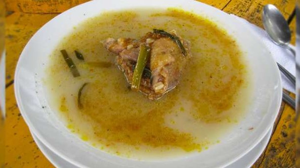
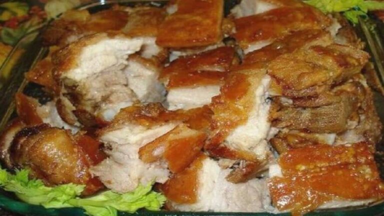
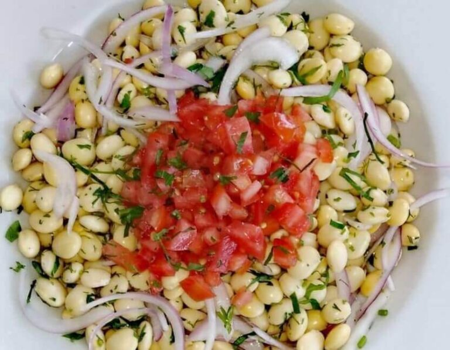
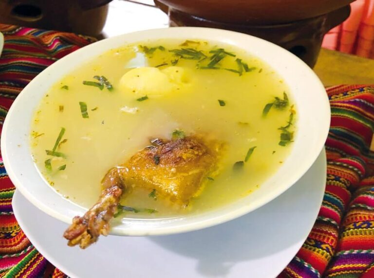
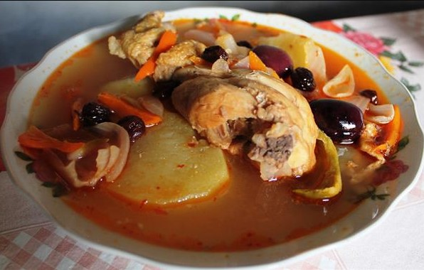

LOS MEJORES PLATOS TIPICOS:
PLATOS |
NOMBRE |
INGREDIENTES |
|---|---|---|
|  | Llunca cashqui |
Gallina (que sea tierna y la cantidad de tu preferencia). Trigo resbalado Orégano seco o tostado Apio Sal Ajo en polvo o molido Perejil Ají panca molido Zanahoria Papas Yungay Cebolla china Agua |
|  | Kuchi kanka |
Lechón Ají mirasol en polvo Vinagre Sal Pimienta Comino Ajos Maíz en grano |
|  | Picante de chocho |
Tarwi o chocho Papa sancochada Cebolla Culantro o perfil (el que sea de tu preferencia) Canchita tostada Ajo molido Palillo (para agregar color) Aceite Sal Ají molido picante Sazonador |
|  | Caldo de cuy o Aca cashqui |
Cuy (la cantidad de tu preferencia) Papas Arroz Hojas de muña Zanahoria Sal Agua Orégano Aceite |
|  | Chicha en caldo |
Chicha (los litros de tu preferencia) Gallina (picada en trozos) Maní tostado entero Ají Comino Ajo Cebolla china Ajíes mirasol (enteros) Aceitunas Azúcar (pequeña dosis) Sal Tapa de chancaca |